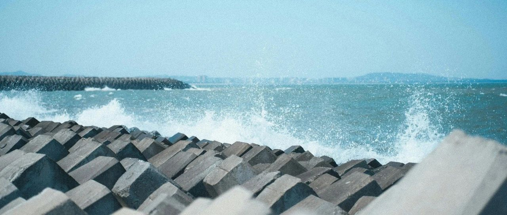

被束缚在经验里~
美股继续修复下跌，标普500微涨0.63%，收盘于5604点；纳指上涨1.52%，收盘于17710.74点。
前天的更新说“标普500，上涨的阻力位在5665和5834这两个节点；纳指的上涨阻力位在18000点左右”。
离这些节点越近，越要注意，不要轻易去追高。
持有的个股中，消费股板块的宝洁和麦当劳下跌1.59%和1.88%，沃尔玛和Costco微涨。消费股这一轮下跌幅度小，目前这几个都接近修复高位。
生物医药板块，持有的个股全部下跌。默沙东下跌2.28%，诺和诺德下跌1.28%，强生下跌1.18%；联合健康下跌2.62%，我设置410和400的买入节点，昨晚顺利触发400的买入节点，成功买入。
礼来拉了泡大的，跌了11.66%，收盘价794.1美元。
昨天我还在说这货财报数据利好，预计920美元没啥压力，彼时的市场行情走向也指向了这点，股价走到了913美元。
结果财报数据发布，数据确实是很亮眼的大利好:
糖尿病药物Mounjaro一季度的销售收入38.4亿美元，同比激增113%；减肥药Zepbound销售额为23.1亿美元，较去年同期的5.17亿美元增长超过三倍。
这些都是礼来在热门GLP-1受体激动剂类药物市场的强劲表现。目前礼来在美国GLP-1所属的肠促胰岛素类药物市场占有53.3%的份额。
但是，利空也立马到来:CVS（连锁药店巨头）宣布，旗下PMB（处方药零售和药品福利管理）业务，会将礼来公司的竞争对手诺和诺德的爆款减肥药Wegovy列为首选的GLP-1类减肥药产品，礼来的Zepbound不在其中。
这对礼来是一个较大的利空。股价因此大幅度下跌。
我增设了720和700这两个买入节点，有机会就多捞点进来，高位卖出太多需补仓。没机会就不勉强，整体来说，机会不大，礼来的修复往往很快。
科技股板块，持有的个股，英伟达、亚马逊、台积电、谷歌、博通，全部上涨1.18-3.6%不等，苹果微涨，AMD和特斯拉微跌。
Meta上涨4.23%，盘中一度大涨7.3%，触及592.95美元；
微软财报数据利好，净利润大增18%，股价因此大涨7.63%，收盘价425.4美元。盘中一度大涨超过10.25%，达到436.99美元。
盘前我看股价达到429美元，达到自己的预期了，就卖了5%；结果盘中设置的435美元卖出5%节点，也被触发了。
另外的两个节点是445和450各减仓5%，主要是这一轮下跌，在350+指数级买入导致买进来的太多了些，先逢高减仓一些，降低成本和仓位，后续好操作。
有时想想，自己做投资操作得很谨慎，毕竟资金体量等同于两三个QDII基金的总和，一不小心就会导致投资动作和投资结果变形。
不同的是，我用的都是自己的资金，只需要对自己负责就行，这样压力小。
… …
昨晚，三个孩子突然问，帮他们在国内的投资操作做得如何了。
他们每年的压岁钱数目不小，因此2015年开始，陆续帮他们做了一些投资操作。
一部分是换成美元，我直接把自己的美股券商账户腾一个出来给他们专用，后来三个孩子共用这个账户，直到去年才分拆。
一部分是在我和我媳妇的支付宝上直接定投QDII基金，准备等他们长大了，把支付宝更名，直接过继给他们。
现在QDII基金大多限额，想买首选目标直接停售，次选又限额，最后只能上备选。具体哪个就不要问了，说了会违规。
整体来说，选的几个都不错，十年时间以来，不断定投的情况下，跑出了270-410%的收益率。
我和我媳妇国内的，直接在私行账户里买QDII了，让银行赚点钱，对自己也方便。
昨天去拜访了两位做外贸的朋友和一位做转口贸易的朋友。
从他们的反馈来看，今年1-3月初的出口量激增，延续了去年下半年的激增态势，主要是老美那边的在囤货。
4月开始，一下子冷清了许多，基本上处于半歇业的观望状态。和我在国内一些做工厂的朋友停业休息，信息对应得上。
另外就是转口贸易的，目前洽谈的业务很多，但落地的很少，主要是因为前景不明朗，大家都在等具体细则，有了细则，才知道怎么利用“规则”做事。
明天会去新加坡一趟，也会和一些做转口贸易的朋友了解一下详情。
目前，我对媒体的信任基本为零，这些大多是垃圾，整天只会耍嘴皮子，连实地调研都不做，只会“好好好”。
做投资，可以的话，调研还是得自己来。该了解的去了解，哪怕比较片面，都比别人整天坐在室内靠臆想写出来的信息来得好、有价值。
今天，我会调一些资金，做一个印度的投资组合。不会多，预计只有投资日本股市的三分一左右。
老美接近和印度、越南达成关税协议，其中印度把最惠国待遇给了老美，以后对谁有最低关税，老美自动适用这一档最低关税。
印度则在纺织、制药、汽车零配件等，争取老美的低关税。这意图很明显，就是要在产业链重构中，争夺原本属于咱们的分工。
值得一提的是，印度目前平均年龄28岁，而且人口在不断增加。这点和咱们不断增加的老龄化很不一样。
但印度有印度的问题，种族、营商环境等，都是影响人口红利释放和吸引外资的硬伤。
我先做个尝试，不一定对，但投一些进去印度的资本市场做观察。投石问路，方便后续的布局。
三个孩子也听懂了这些思路，问东南亚和印度，会不会是咱们未来最大的产业转移目的地和竞争对手？
我说，不仅是未来，现在都已经是了。
就这样吧。
免责声明：本人提供的信息仅供参考，不构成投资建议。本人的交易不代表任何立场；投资者应根据自身财务状况、投资目标等情况自主做出投资决策并承担投资风险。投资有风险，入市需谨慎。